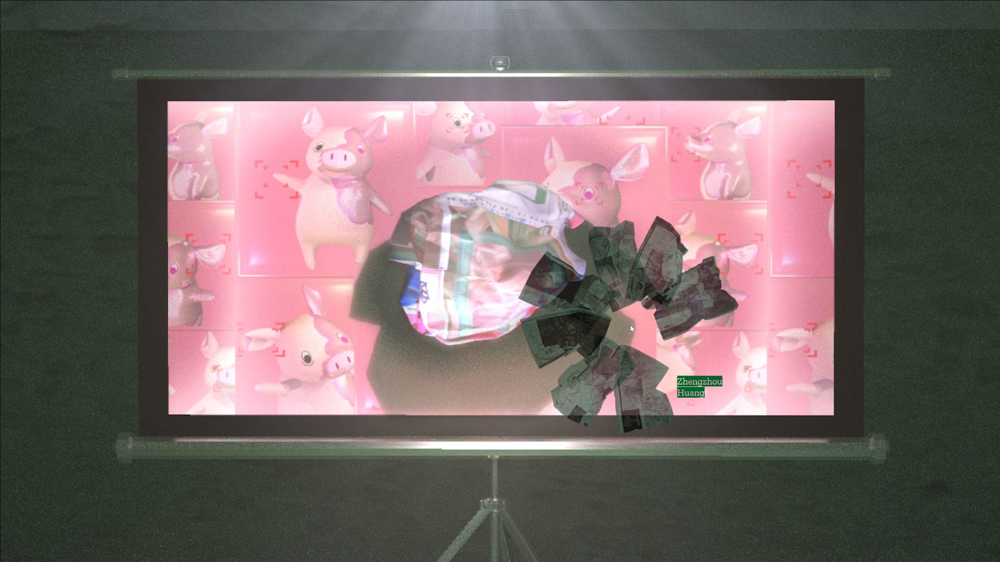
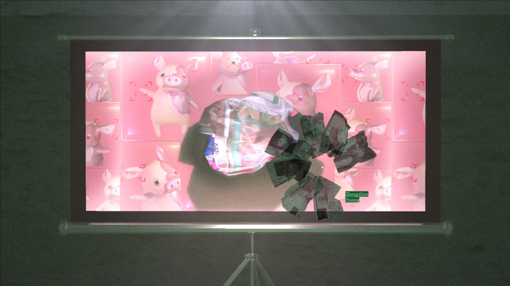

Share Screen
MFA Preview Show, Design | Media Arts:
Oct 29, 2020
I worked with my MFA peers on the exhibition website.
I mainly contributed to the interactivity, UI, webGL, and device-responsiveness of its homepage.
Show Statement:
Screen is becoming a public space. In the context of the pandemic, we convene online and communicate through screens. The act of sharing screens is a public performance. Our desktop is both a home and a stage. There are times when we gather online and feel pixelated. Our voices are low-passed and we move with the speed of our network. Our image resolution becomes an important part of our presence. Speakers speak for us and the video portraits are our new faces. In this situation where screens take over, the 2021 UCLA DMA MFA cohort presents their preview exhibition, SHARE SCREEN.
SHARE SCREEN takes into account the screen as the main medium, and so the tension in digital space. Concrete interactions are made virtual as exchange of data, while conversely, a mouse click some distance away is also a remote yet intimate touch on the artworks themselves. This exhibition features eleven works by Alvaro Azcárraga, Tristan Espinoza, Zheng Fang, Zhengyang Huang, Zhengzhou Huang, Dasul Kim, Sam Malabre. Within the gaps between digital media and our mediated environments, these works make space for thoughts around the artificial and the biological, synthetic and organic, fantasy and reality, simulation and appropriation.
We would like to thank Alan Wood, Brenda Williams, Casey Reas, Jonathan Cecil, and Wiley Wiggins for making this show possible and all the D|MA Staff and Faculty for their support in the last year.